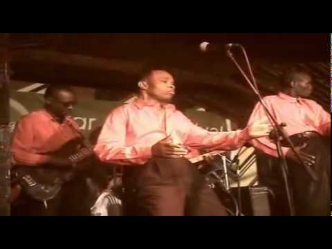
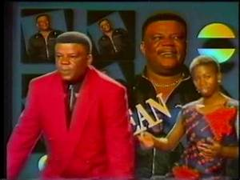

Limpopo Internationl
Musa Juma Mumbo (December 6, 1968[1] – March 15, 2011) was a rumba and Benga musician from Kenya. He was born to the second wife of his father, a policeman, and into a family of 18 children. He grew up in Homabay where he attended primary and secondary schools.He began singing and playing instruments at a young age. His first instruments were guitars and drums made from tins and strings. He was the bandleader, guitarist and composer for Limpopo International. Most of his music was sung in Dholuo language. Some of his songs are a fusion of the Luo and Congolese musical styles. He also sang in Kiswahili and English.read more
songs
- Rikini nyombo
- Siaya kababa
- Osiepe
- Pacheko
- Christina
- Bibuta
- Saida
- Sudan
- Hera mwandu
- Maselina
- Hera mudho
Les Wanyika

Les Wanyika was a prominent band with Tanzanian and Kenyan members and was based in Kenya. It was formed in 1978 when guitarist Omar Shabani, bassist Tom Malanga and two other members left Simba Wanyika. They were joined by John Ngereza and Issa Juma. Les Wanyika made many popular recordings, but are best remembered for their 1979 classic Sina Makosa and Paulina. Vocalist Issa Juma left the band soon afterwards to concentrate on other musical projects. The group continued until Omar Shabani's death in 1998. John Ngereza died two years later.read more
songs
- Sina makosa
- Nimaru
- Tama mbaya
- Maisha ni mapambano
- Mbaya wako rafiki yako
- Amigo
- Afro
- Barua yako
- Ufakara sio kilema
- Tafuta wako
- Safari ya samburu
Madilu System
Jean de Dieu Makiese (28 May 1952 – 11 August 2007), popularly known as Madilu System, was a Congolese rumba singer and songwriter, born in what was then Léopoldville, Belgian Congo. He was once a member of the seminal band TPOK Jazz which dominated the Congolese scene from 1960s through 1980s.read more
songs
- Frere Edouard
- Djaffar
- Virus
- Apula
- L'eau
- pardon
- Aminata
- Vincent
- Duoble zero
- Thermometre
- Vice versa
Maroon Commandos
Maroon Commandos is a musical group from Kenya. It is a military band belonging to 7 Kenya Rifles (Kenya Army Infantry) of the Kenya Army. They are based at the Langata Barracks in Langata, Nairobi. The group performs benga, rumba and other styles of music. They perform both original and cover versions. The band plays often at state functions.read more
songs
- Riziki haivutwi
- Dawa nimuone
- Pesa maradhi ya moyo
- Hasira hasara
- Shikamoo
- Kenya unite
- Shika kamba